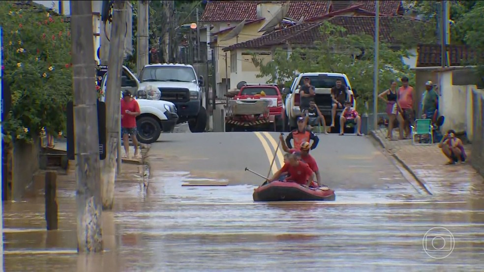

Texto sobre Vila Velha que alaga toda vez que alguém cospe na rua.

As fortes chuvas podem causar grandes alagamentos em Vila Velha, trazendo transtornos para moradores e comerciantes.
Ruas e avenidas ficam cobertas pela água, dificultando a circulação de veículos e pedestres e, em alguns casos, provocando prejuízos materiais.
Os alagamentos também mostram a importância de investir na drenagem urbana, na limpeza de bueiros e na prevenção de enchentes.
A população deve ficar atenta aos alertas da Defesa Civil e evitar áreas alagadas durante períodos de chuva intensa.
É fundamental que poder público e comunidade trabalhem juntos para reduzir os impactos das chuvas e tornar Vila Velha uma cidade mais preparada e segura.
DOWNLOADS
link_do_pdf
link_do_doc
Retornar